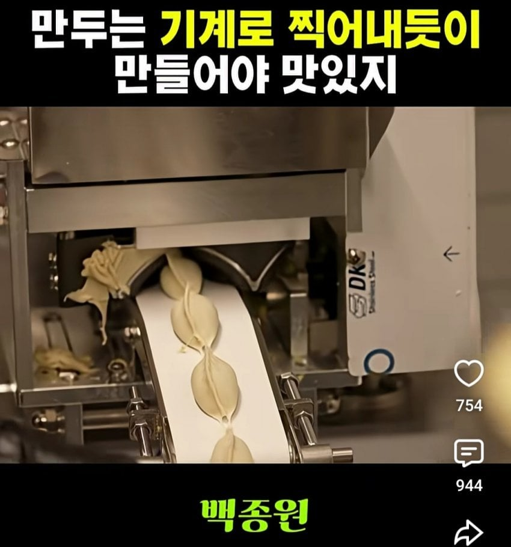
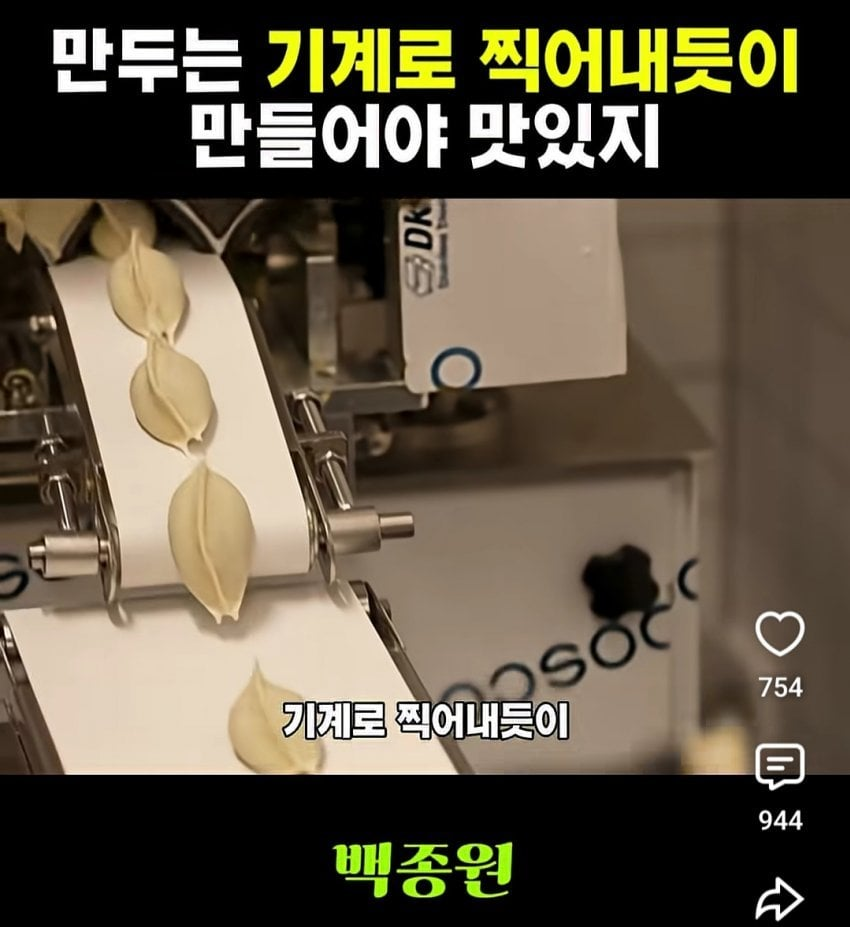
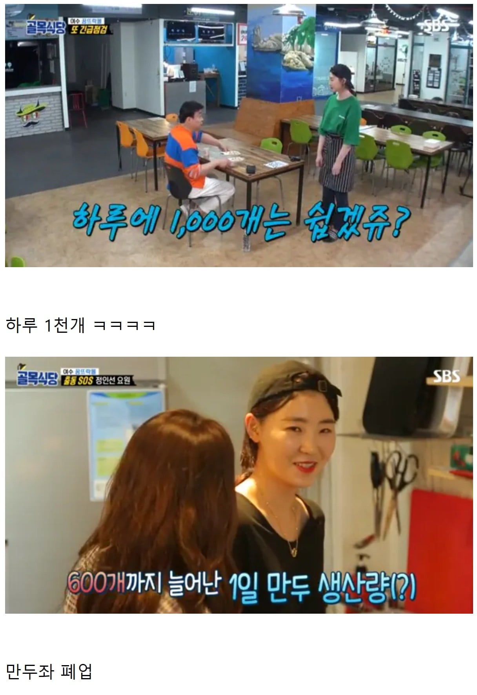
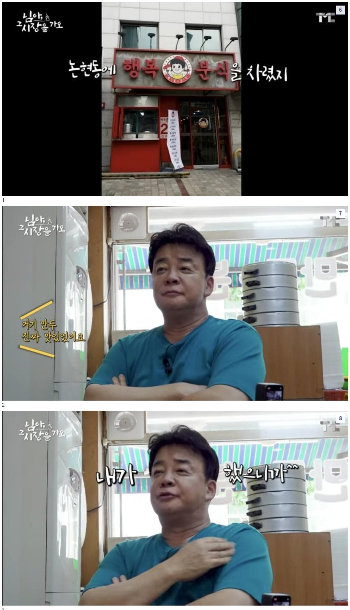
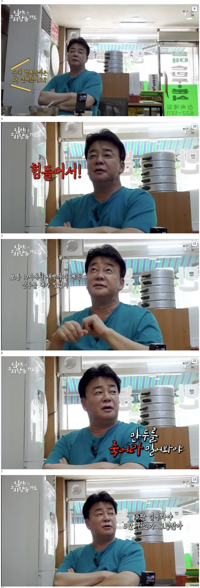

    /나 여/  ㅋㅋㅋㅋㅋㅋㅋㅋㅋㅋㅋㅋㅋㅋㅋㅋㅋㅋㅋㅋㅋㅋㅋㅋㅋㅋㅋㅋㅋㅋㅋㅋㅋㅋㅋㅋㅋㅋㅋㅋㅋㅋㅋㅋㅋㅋ
댓글
수집 당시 댓글 6개
밤귀신 · 13 시간 전
클린로브링어 · 13 시간 전
꽈배기때는 시간당 얼마나 만드느냐도 가격에 포함된다고 뭐라하던데
만두는 또 손으로 빚으면서 싸게 팔라했네
클로드 · 13 시간 전
몇명의 인생을 조진거임?
년째하는중 · 12 시간 전
그냥 손만두집 할 생각을 안하는 게 맞음
폐업하고 다른 일 알아보는 게 잘한 결정임
도파민수용체결함 · 11 시간 전
할머님사랑꾼 · 11 시간 전
만두는... 한사람당 하나씩이야..